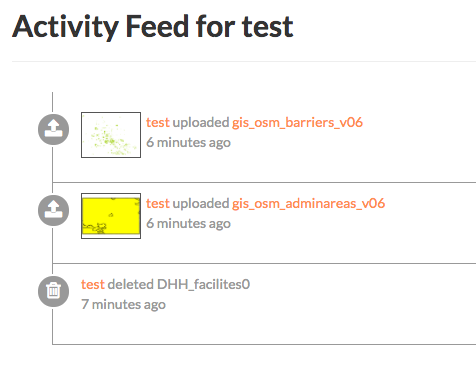
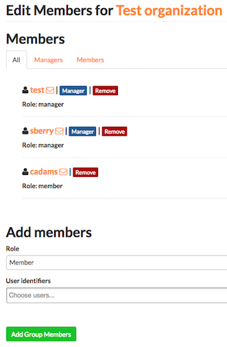

Accounts, Users and Groups¶
Exchange is a social platform, making the user account the primary component of any Exchange instance.
Creating a new account¶
Depending on how the Exchange instance was configured, you may have to register for an account. If the Register link is not displayed, then you will need to contact the Site Systems Administrator to have an account created.
If the Register link is displayed then register a new account by completing the following steps:
Select the Register link and fill out all fields in the following form.

Depending on how the Exchange site was configured you may have to confirm your email. If this is the case, follow the steps listed in the instructional email you will receive.
Managing your profile¶
Your profile in Exchange is where you can add your points of contact, interests, and other related content you may want to publish. This is how other users will find you, and view your work.
To adjust your profile settings complete the following steps:
Click on your user name in the top right of the screen. Select Profile from the drop-down menu to enter the Profile Settings page. This will display your current profile settings.

To modify your profile, select the Edit Profile link.
On this page, you can update your information, including your avatar. It is important to include (at a minimum) your First name, Last name and Email address. This is required to properly display history of GeoGig versioned layers.

When finished, select the Update Profile button.
Viewing other user accounts¶
Once your account is created in Exchange, you will be able to view other user accounts on the system. This will let you see who else may be interested in the projects you are working on, or help you find additional data through collaboration.
- Select the About link on the Exchange toolbar, and click People in the drop-down menu. You will see a list of thumbnails for all users registered on this system. Avatar images will display if the user has provided one.


Click on an individual username to see their contact information, and any resources owned by the user. Any layers, maps or documents they have added to Exchange will be listed under Resources.

You can also click on the User Activities link to see the chronological list of that user’s activities.

Managing groups¶
Registered Exchange users can create and be added to groups. Groups are a great way to organize and manage your team. You can see what action has been taken by the group and its members through the activity feed.
View an existing group¶
- Select the About link on the Exchange toolbar, and click Groups in the drop-down menu. A list of all existing groups within Exchange will display.
- Click on the name of a group to see the contact information, a list of members, and any additional details provided by the group managers.

Create a group¶
- Select the About link on the Exchange toolbar, and click Groups in the drop-down menu. A list of all existing groups within Exchange will display.
- Click the Create a New Group button, and fill out as much information about your group as possible. Once you have added the group name, contact information, and a brief description of the group, click the Create button at the bottom of the page.

- You will be returned to your group’s information page. To add other group members, select the Manage Group Members link. Type the name of a registered Exchange user in the User identifiers textbox, and select their role as either a Member or Manager.
You can add more than one new member at a time, as long as they are going to have the same role.

- Click the Add Group Members button when you have finished.
You can view all of the managers or members of the group by clicking on their respective tabs.
Note: Groups can only be deleted from Exchange by an administrator. If you have a group you no longer need, please contact your Exchange administrator.